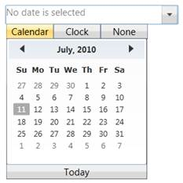
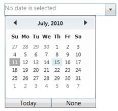

DateTimeEdit control supports two different Popup styles. You can switch between the popup styles by using the EnableClassicStyle property.
|
XAML |
|
<shared:DateTimeEdit EnableClassicStyle="True" Height="25" Width="220" IsEmptyDateEnabled="True"/> |

Figure 297: EnableClassicStyle set to true
|
XAML |
|
<shared:DateTimeEdit EnableClassicStyle="False" Height="25" Width="220" IsEmptyDateEnabled="True"/> |

Figure 298: EnableClassicStyle set to false
See Also